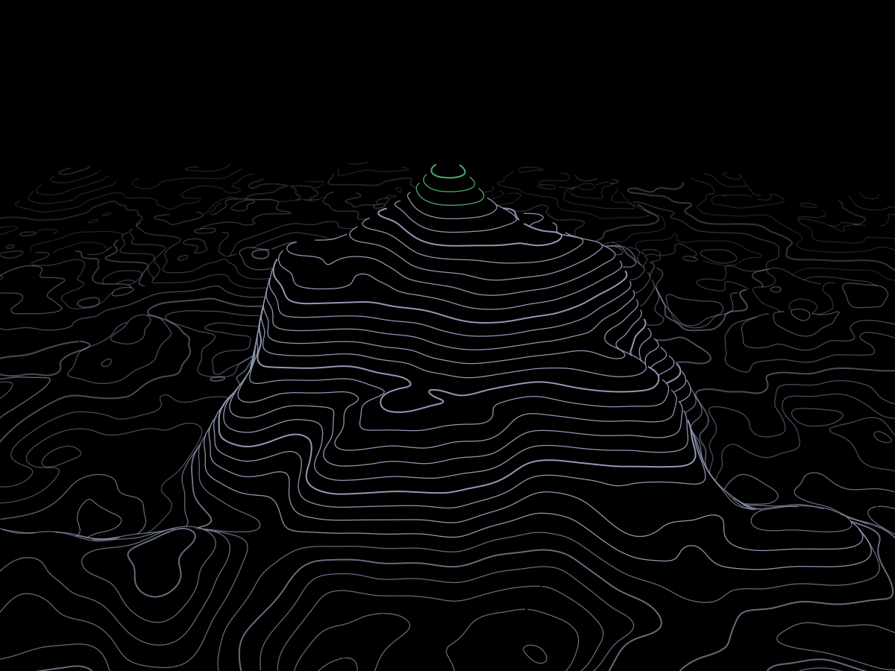

How we made the Tibba mountain
The first thing anyone sees on tibba.design is a mountain. We want to be straightforward about what it is, how it works and what it costs your device. Here's how it got there: a year of sketches, one generator, and a lot of contour lines.
Why a mountain
Tibba means a small hill. We describe our work as climbing with a client: base camp, the ascent, the summit, and then the next peak. A mountain was the obvious symbol, which is exactly why it was hard.
- No stock peaks. No low-poly triangles, no snowy photograph.
- Drawn in our language. The mountain had to look like the rest of the studio.
- Surveyed, not rendered. It had to move like a map being walked.
- Contours are honest. Each line is a single height; their spacing tells you how steep the ground is.
Building the landform
Every mountain on the site, from the hero to the four client summits, comes from one generator we call the landform. It isn't a model. It's a recipe: parts summed together, each with a height, a spread and a sharpness. One part on its own is a smooth cone, so the character comes from what we cut into it:
- Domain warp pushes the ground sideways before it's measured, so ridgelines bend.
- Spurs run down from the summit like the fingers of a hand.
- Flutes are the narrow gullies between them, where rain would run off.
- The Mountains lab is our internal tool for tuning it, with height brushes, erosion passes and a button that sends a preset to the hero.


From heights to lines
The landform gives a height at any point. To draw it, we sample heights on a grid and run marching squares over it.
- Per cell, we check which corners sit above a height and draw the short segment where the line must cross.
- Per height, the segments are stitched into one contour. Repeat for every height and you have the mountain.
- On screen, each line is a thin ribbon of triangles drawn by a shader, so its width and fade change on the GPU.
// one contour at height h, over a grid of samples
for (let y = 0; y < rows; y++) for (let x = 0; x < cols; x++) {
const c = (z[y][x] > h) | (z[y][x+1] > h) << 1
| (z[y+1][x+1] > h) << 2 | (z[y+1][x] > h) << 3;
if (c && c !== 15) segments.push(...edge(c, x, y, h));
}Ink, light and air
- Two states. In the loader it's lit like a relief map; as you scroll it morphs to flat ink on black.
- Aerial fade dims lines with distance, the way far hills go pale.
- Pointer parallax moves the camera a few pixels with your cursor, enough to give the ground depth.
Walking the switchbacks
Our first trail ran straight up the slope. It looked like a crack, not a path. Real trails on steep ground zig-zag.
- Written around the summit: the distance from the top shrinks as you climb while the angle swings across the face.
- A rounded triangle wave, not a sine: straight legs and hairpin turns instead of a squiggle.
- A slow wobble in distance and angle, so no two legs are the same length.
- It ends on our mark at the summit, drawing on as you arrive.
Four more summits
The client summits share the hero's heightfield, so the home page's mountain and Our Work read as one range seen from two places.
 GrowwFirstpost
GrowwFirstpost
Breathe ESG Shyft & Mindhouse
Shyft & Mindhouse- Each summit is coloured for its client, with its own trail from trailhead to top.
- For thumbnails and print, we project the heightfield from the hero's camera, remove hidden lines and fit smooth curves.
- Every illustration is the real mountain, not a trace of it.
What it asks of your phone
- Small screens get a film, pre-rendered from the same scene, instead of live WebGL.
- It looks identical, loads in a fraction of the time and leaves the battery alone.
- Reduced motion is respected: if you've asked for it, the mountain stays still.
What we learned
- Build the system, not the picture. One change to the landform shows up in the hero, the summits, the thumbnails and the share card.
- Restraint is a feature. Fewer contours, one accent colour, one trail instead of five.
A mountain only needs one path to the top.
— The Tibba team
Update
The same summits now sit on each case study's share card, so a link to Groww or Firstpost previews with its own mountain. We'll add a note here whenever the landform changes.